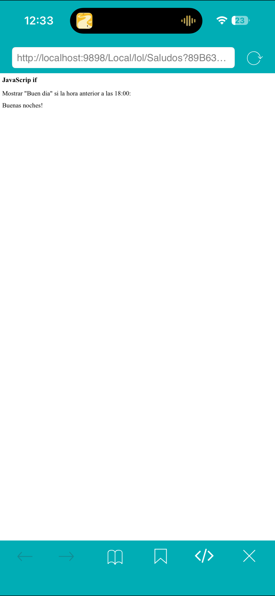
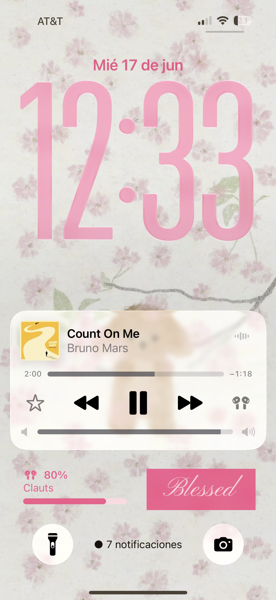
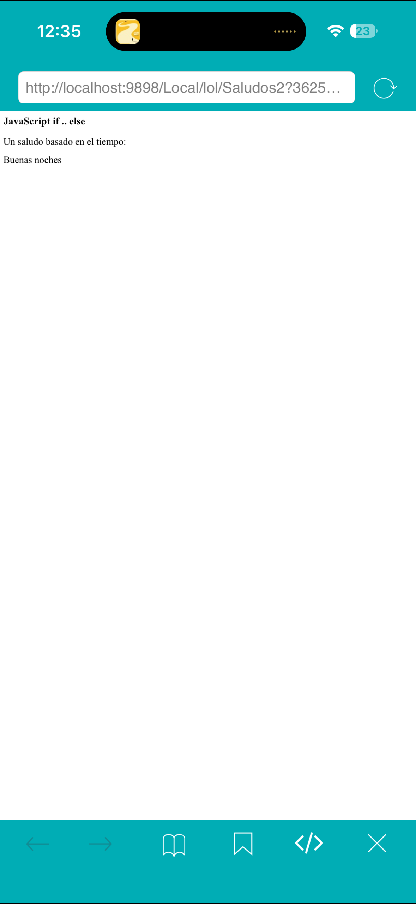
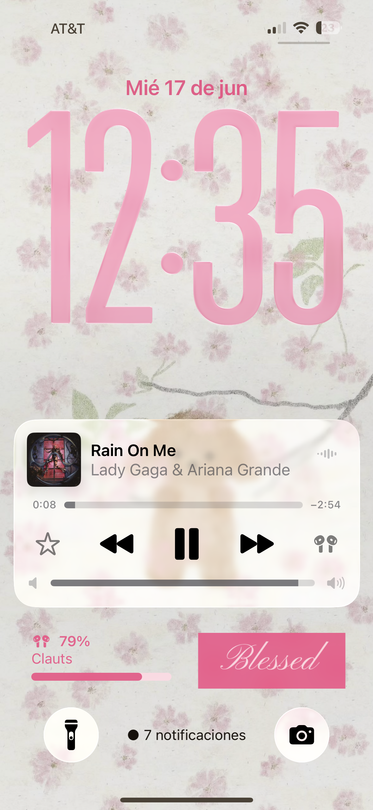

¿Qué hice?
En esta práctica utilicé la sentencia if para evaluar una condición y mostrar un saludo dependiendo de la hora actual del sistema.
Comandos utilizados:


¿Qué hice?
En esta práctica utilicé las sentencias if y else para mostrar diferentes mensajes dependiendo de la hora actual. Si la hora es menor a 18 se muestra "Buen día", de lo contrario se muestra "Buenas noches".
Comandos utilizados: